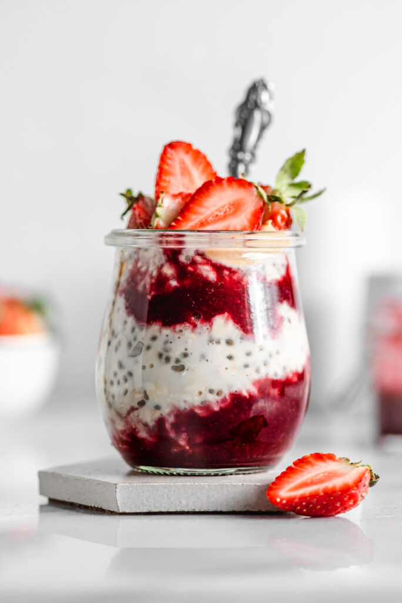

Avena Trasnochada

Descripción
Esta receta vegana de avena trasnochada está lista en menos de 5 minutos para un desayuno equilibrado para llevar.
Ingredientes
- 55gr Avena
- 240 ml de leche de soya
- 30gr Maní
- 30gr Chia
- 1 Guineo
Pasos
- Preparar una parte de vaena por 4 de leche de soya liquida
- Depositar la avena en un recipiente y encima la leche de soya
- Agregar Chia, tapar y gardar en el refrigerador
- Al momento de Comer cortar el guineo en rodajas y agregarlo
- A disfrutar!